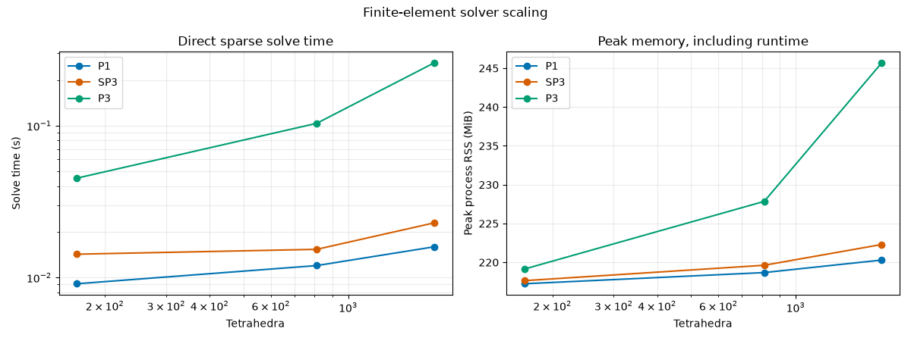

Note
Go to the end to download the full example code.
Benchmark P1, SP3, and P3 solver scaling#
Measure solve time and peak process memory for three finite-element models on successively finer tetrahedral meshes. Each case runs in a fresh process so its peak resident memory is measured independently. These small illustrative benchmarks show where P3 may justify testing iterative solvers; they do not establish that an iterative method or preconditioner will be faster or more reliable.
import json
import subprocess
import sys
from pathlib import Path
import matplotlib.pyplot as plt
import numpy as np
Run each solver in an isolated process#
Isolated processes give each solver and mesh its own peak-RSS measurement. The target sizes produce a small enough study for a documentation build while still showing how the six-field P3 system begins to cost more than P1/SP3.
repository_root = next(
parent
for parent in (Path.cwd().resolve(), *Path.cwd().resolve().parents)
if (parent / "tools" / "benchmark_scaling.py").is_file()
)
benchmark_script = repository_root / "tools" / "benchmark_scaling.py"
target_resolutions_mm = (2.0, 1.0, 0.75)
completed = subprocess.run(
[
sys.executable,
str(benchmark_script),
"--resolutions-mm",
*(str(resolution) for resolution in target_resolutions_mm),
],
check=True,
capture_output=True,
text=True,
)
benchmark = json.loads(completed.stdout)
cases = benchmark["cases"]
solver_names = ("p1", "sp3", "p3")
colors = {"p1": "#0072B2", "sp3": "#D55E00", "p3": "#009E73"}
for case in cases:
memory_mib = (
"unavailable"
if case["peak_process_rss_bytes"] is None
else f"{case['peak_process_rss_bytes'] / 2**20:.1f} MiB"
)
print(
f"{case['solver'].upper():>3} | "
f"{case['tetrahedra']:>6} tetrahedra | "
f"solve {case['solve_seconds']:.4f} s | "
f"peak process RSS {memory_mib}"
)
P1 | 166 tetrahedra | solve 0.0091 s | peak process RSS 217.2 MiB
P1 | 812 tetrahedra | solve 0.0120 s | peak process RSS 218.7 MiB
P1 | 1767 tetrahedra | solve 0.0159 s | peak process RSS 220.3 MiB
SP3 | 166 tetrahedra | solve 0.0142 s | peak process RSS 217.6 MiB
SP3 | 812 tetrahedra | solve 0.0153 s | peak process RSS 219.6 MiB
SP3 | 1767 tetrahedra | solve 0.0229 s | peak process RSS 222.3 MiB
P3 | 166 tetrahedra | solve 0.0451 s | peak process RSS 219.1 MiB
P3 | 812 tetrahedra | solve 0.1036 s | peak process RSS 227.9 MiB
P3 | 1767 tetrahedra | solve 0.2593 s | peak process RSS 245.7 MiB
Compare solve time and peak memory#
Peak process RSS includes Python, NumPy, SciPy, and the mesh as well as the solver. Compare growth across mesh sizes, and treat small differences near the process baseline as approximate.
figure, axes = plt.subplots(1, 2, figsize=(12, 4.5))
for solver_name in solver_names:
solver_cases = [case for case in cases if case["solver"] == solver_name]
tetrahedra = np.array([case["tetrahedra"] for case in solver_cases])
solve_seconds = np.array([case["solve_seconds"] for case in solver_cases])
axes[0].plot(
tetrahedra,
solve_seconds,
marker="o",
color=colors[solver_name],
label=solver_name.upper(),
)
peak_rss = [case["peak_process_rss_bytes"] for case in solver_cases]
if all(value is not None for value in peak_rss):
axes[1].plot(
tetrahedra,
np.asarray(peak_rss) / 2**20,
marker="o",
color=colors[solver_name],
label=solver_name.upper(),
)
axes[0].set_xscale("log")
axes[0].set_yscale("log")
axes[0].set_xlabel("Tetrahedra")
axes[0].set_ylabel("Solve time (s)")
axes[0].set_title("Direct sparse solve time")
axes[0].grid(True, which="both", alpha=0.25)
axes[0].legend()
axes[1].set_xscale("log")
axes[1].set_xlabel("Tetrahedra")
axes[1].set_ylabel("Peak process RSS (MiB)")
axes[1].set_title("Peak memory, including runtime")
axes[1].grid(True, which="both", alpha=0.25)
axes[1].legend()
figure.suptitle("Finite-element solver scaling")
figure.tight_layout()

Decide what to benchmark next#
P3 eliminates ten odd moments and solves six coupled even-parity fields. The current implementation uses sparse direct solves. A rapid increase in P3 time or memory relative to P1/SP3 is a reason to prototype iterative methods and preconditioners on representative larger systems. That follow-up must compare solution residuals, detector-power accuracy, convergence rate, and total memory; a lower memory estimate alone is not enough.
finest_tetrahedra = max(case["tetrahedra"] for case in cases)
finest_cases = {
case["solver"]: case for case in cases if case["tetrahedra"] == finest_tetrahedra
}
p1_time = finest_cases["p1"]["solve_seconds"]
p3_time = finest_cases["p3"]["solve_seconds"]
print(
f"At {finest_tetrahedra:,} tetrahedra, P3 took "
f"{p3_time / p1_time:.1f}× the P1 solve time in this run."
)
At 1,767 tetrahedra, P3 took 16.3× the P1 solve time in this run.
Total running time of the script: (0 minutes 14.032 seconds)